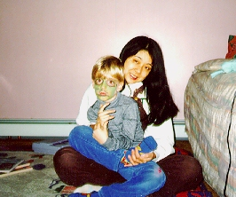
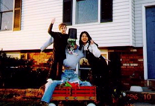

ベビーシッター (96.10)
David & Justine

|
David（７歳）と Justine（５歳）とは95年の秋に知り合いました。私はもう一件ベビーシッターをしているのですが、子供をマクドナルドへ連れていった時に、二人のお母さん Teddy が私に声をかけてくれたのが始まりです。今は週に一度、二人を学校に迎えに行ってます。Teddy と Dennis（両親）はとても仲のいいカップル。普段は忙しいときに私は呼ばれますが、この前はジャスティンが｢今日は Mom と Dad はデートだよ」って教えてくれました。(^^) ---------- 彼らにとって外国人（私）は初めてなので興味があるらしく、いろいろ聞いてくるの。ディビッドは本当に日本に興味があるみたい。でも、ジャスティンはディビッドが質問するので、「自分も」と思ってディビッドのあとに絶対何かを質問してきます。 Ｄ：「Keiko、 日本にも雪降るの？」 Ｋ：「（地球儀を見せて）日本は小さいけど細長いんだよ。こっちの方は降るけど、こっちは全然ふらないよ」 Ｊ：「日本にはおもちゃある？」 Ｋ：「あるよ〜」 Ｄ：「日本人って Keiko みたいな髪してるの？」 Ｋ：「日本人の髪は皆、私と同じ色なんだよ。目も皆、茶色」 Ｊ：「日本の子供はおもちゃで遊ぶ?」 Ｋ：「遊ぶよ〜」 Ｄ：「不思議。どうして皆、同じなんだろう？」 Ｋ：「どうしてかはわからないけど、アジア人は皆、こうだよ。アジア人とアメリカ人は習慣も違うんだよ。私たちはお米をたくさん食べるの。」 Ｊ：「日本の子供もおもちゃを買ってもらえるの？」 Ｋ：「買ってもらえるよ。ジャスティンと一緒だよ」 Ｄ：「服装も違うの？」 Ｋ：「今は同じものを着てるよ。でも昔は違ったの。着物っていうのを着てたんだよ。」 Ｊ：「日本の子供もぬいぐるみ、持ってる？」 Ｋ：「持ってるよ〜」 Ｄ：「着物ってなに？」 Ｋ：「日本の伝統(tradition)で、、、」 Ｊ：「日本の子供もベッドの上にぬいぐるみを置いてる？」 Ｋ：「置く子もいるよ。アメリカ人だって置かない子もいるでしょ？おんなじだよ。」 Ｄ：「伝統って？」 Ｋ：「えーと、、どの国も文化(culture)を持ってて、、、」 Ｊ：「日本にも任天堂（こっちではメーカーの名前でゲームを呼ぶ）あるの？」 Ｋ：「任天堂は日本から来たんだよ。」 Ｄ：「文化って？」 Ｋ：「えーと、、、歴史(history)の流れの中で、、、、」 Ｄ：「歴史って？」 .....このあと、私の長い説明が続くのでした、、、(^^; --------- この写真はハローウィンの時のものです。ディビッドは忍者、ジャスティンはモンスターになってます。忍者はこっちでもとてもポピュラーです。ディビッドは大好きなんだって。子供たちは仮装して学校に行き、一日中パーティをしたそうです。このあと、お父さんのデニスが帰ってきて、ジャスティンのメークを落とし、本格的に描き直して、"Trick or treat?" に行きました。"Trick or treat?" はアメリカのお祭りの一つで、１０月３１日の夜、子供たちが仮装してお菓子をねだりに行く行事です。 |
 
=左 ジャスティン(5歳)と、右 ディビッド(7歳)とハローウィン用の飾りと(96.10)=
[ホームへ] [写真一覧へ]